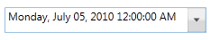

Steps to create a DateTimeEdit control in application by using Blend are as follows:
1. Open Blend, On the File Menu click New Project. This opens the New Project dialog box.

Figure 422: New Project dialog box
2. In the Project type’s panel, select WPF application and then click OK.

Figure 423: New Project
3. Add the following Reference with the sample project.
· Syncfusion.Shared.Silverlight.dll
4. On the Window menu, select Assets. This opens the Assets Library dialog box.
5. In the Search box, type DateTimeEdit. This displays the search results.
6. Drag the DateTimeEdit control to Design View.

Figure 424: Design View.
|
XAML |
|
<syncfusion:DateTimeEdit Height="29" Margin="75,71,50,0" VerticalAlignment="Top"/>
|

Figure 425: DateTimeEdit control
See Also
Creating a DateTimeEdit control using C#
Creating a DateTimeEdit control in XAML